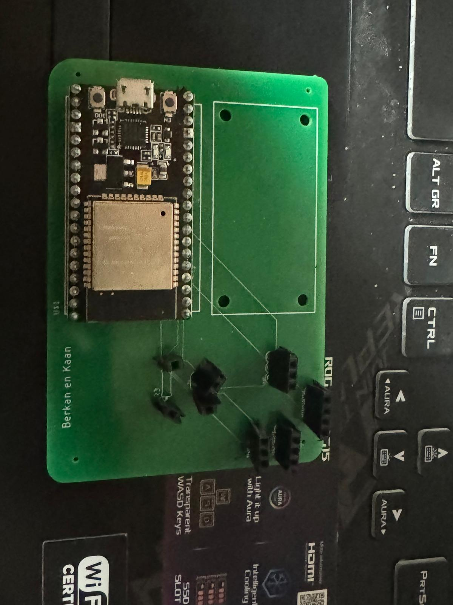
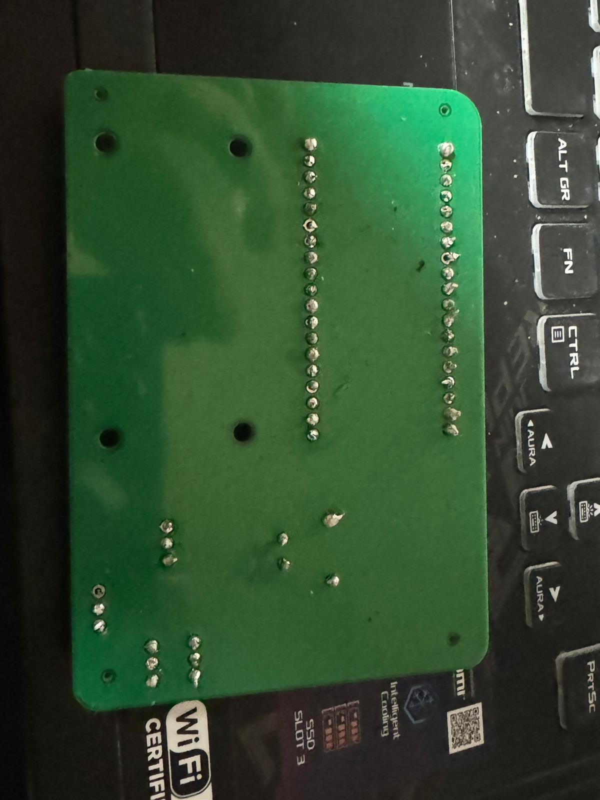
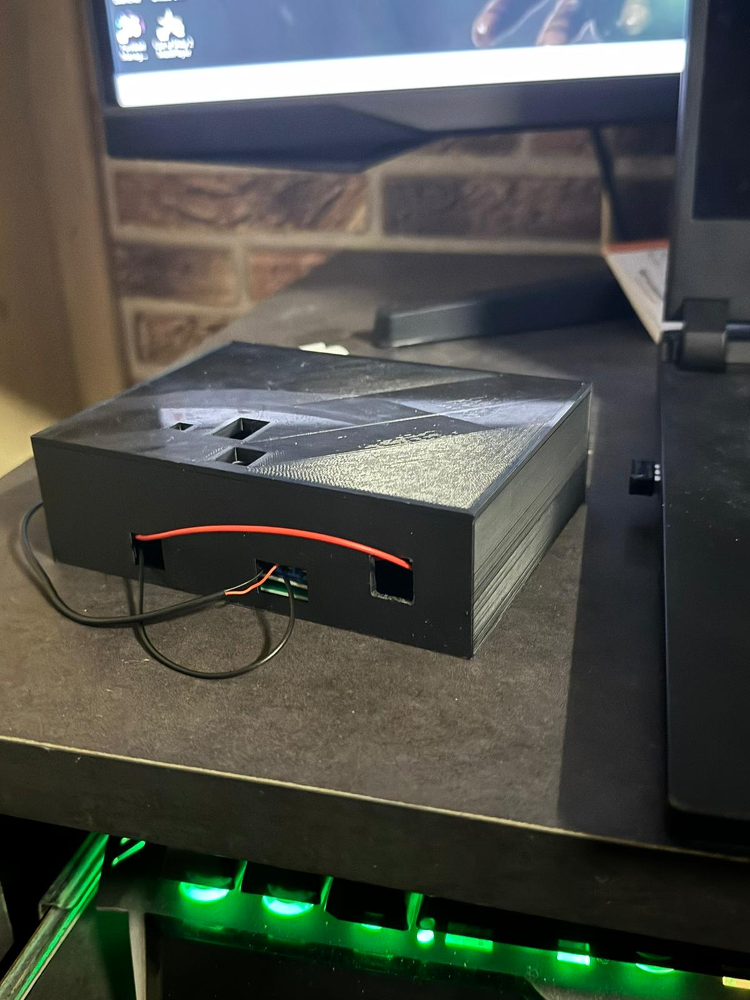

Tijdens Smart Industry hebben we een leuke opdracht gehad en kennis gemaakt met de ESP 32. Dit is een Arduino achtig apparaat waarmee verschillende codes kan versturen naar onderdelen. Ik zelf was hier nog onbekend voor, al hoewel ik de codes goed begreep, was de bekabeling en aansluiting voor mij ook totaal nieuw.
Tijdens de lessen ging niet altijd alles heel soepel, mijn ESP ging op een gegeven moment kapot toen ik teveel aansluitingen had, waardoor ik veel tijd verloren was aan het werken met half kapotte ESP. Gelukkig kon ik snel een nieuwe krijgen, en is alles goed gekomen. Ik vond het begrijpen van ESP 32 en sensoren op het begin erg lastig, maar kreeg door de goede begeleiding alles goed onder de knie. Hieronder zie je het resultaat van mijn ESP (Gesoldeert).
 Ik vond het Soldeer workshop een van de leukste workshops die aangeboden waren, ik kon daardoor mijn ESP maken door tin te smelten. Ik vond dit heel leerzaam, want er zit een bepaalde techniek achter die je onder de knie moet krijgen. Het enige wat ik jammer vond was dat ik nog ziek was toen de workshop plaats vondt. Ook zat ik achteraan waardoor ik weinig van de uitleg verstond, desondanks hebben ik en mijn groepje goed kunnen solderen, dus daat ben ik zeker heel trots over.
Het lastigste kwam hierna en dat waren de Solidworks lessen, waarbij ik wel veel geleerd heb over 3D-printers, alleen vond ik het modulleren binnen Solidworks zeer lastig. Zelfs het doorlopen van de tutorials vond ik eerlijk gezegd lastig. Toch na veel moeite is het uiteindelijk toch gelukt om te 3D-modulleren. Eerlijk gezegt vond ik dit wel een hele vette ervaring vooral toen ik en Berkan naar de fablab gingen om te printen. Uiteindelijk bleek het dat ik een fout had gemaakt bij een van de opmetingen, daardoor moest ik de USB-kabel ingang wat breder maken, dat heb ik gedaan door een klein beetje te slijpen met een stanley mesje.
Nadat het plantenbakje klaar was, was het voor ons hoogste tijd om te experimenteren, ik heb daarbij heel veel testen opgenomen (teveel), waarbij er altijd wel iets misging. Totdat alles werkte, wat ik vooral heb gemerkt is dat dankzij het soldeerwerk een beetje onduidelijke is geworden welke kabels naar de GND, stroom en IO moesten gaan. Uiteindelijk na veel gepuzzel in zowel de code als het bordje is het uiteindelijk gelukt. Dit is dan ook zeker iets waar ik echt trots op ben, aangezien met dit product echt veel moeite heb gehad.
Neem contact met ons op via b.akdeniz@student.han.nl